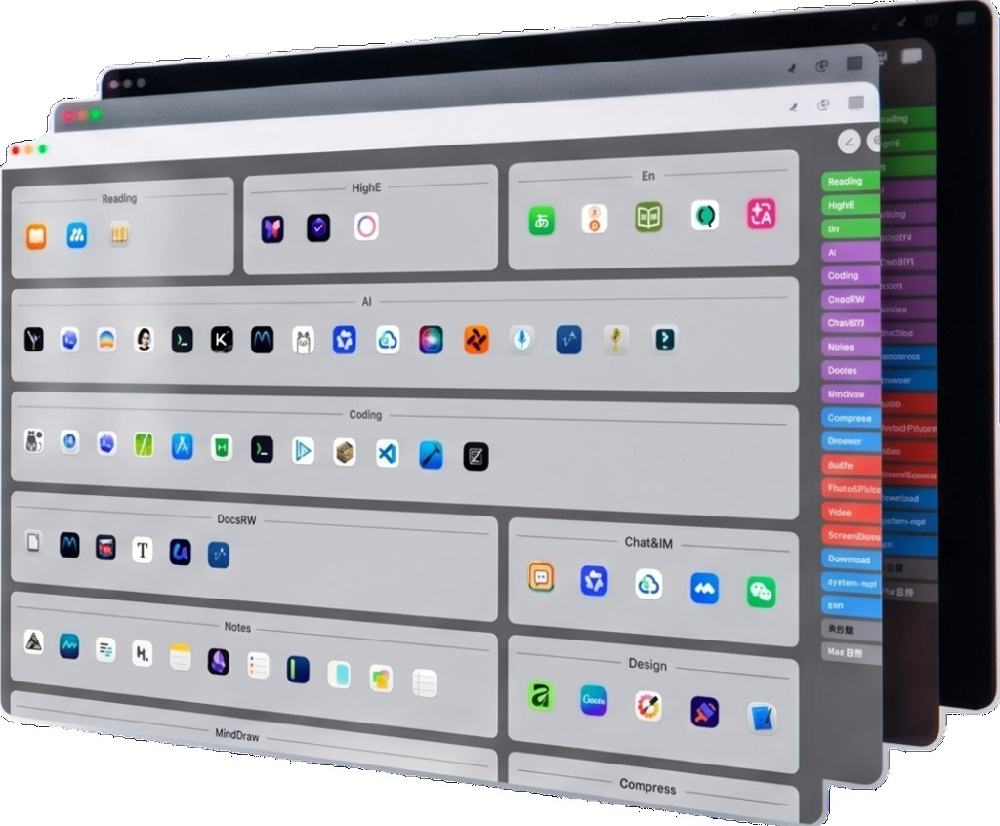
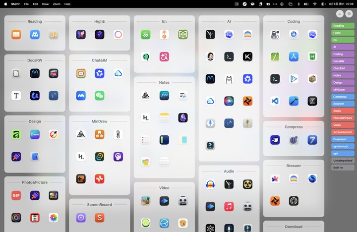
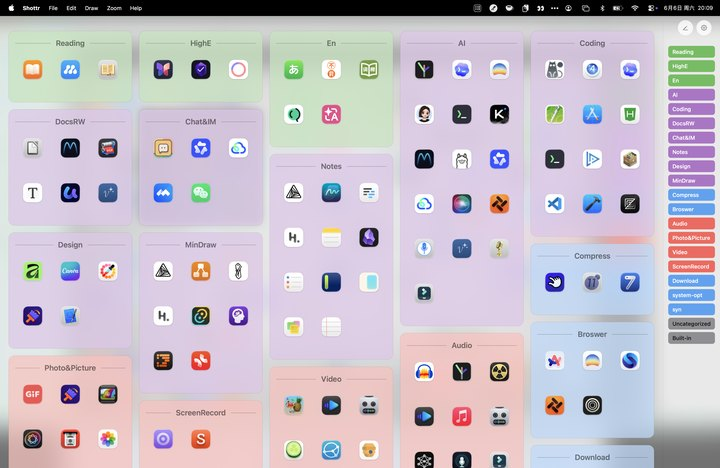
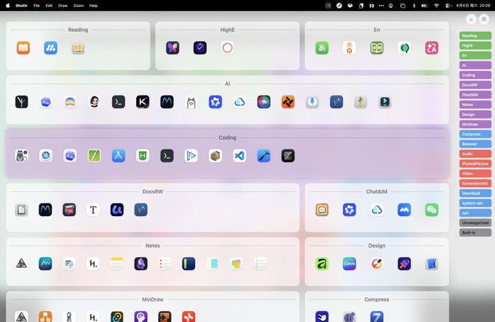
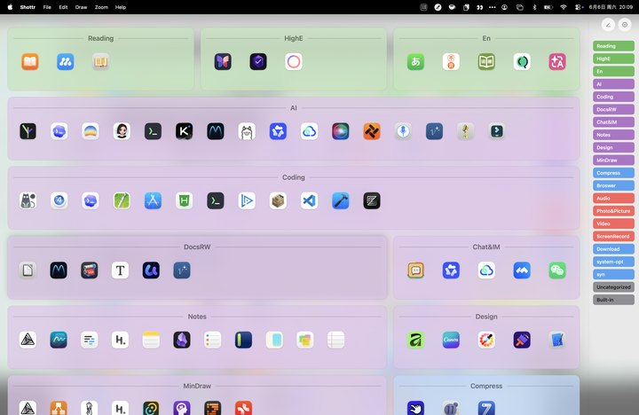
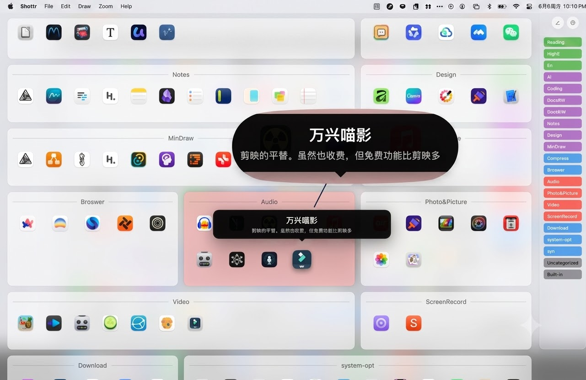
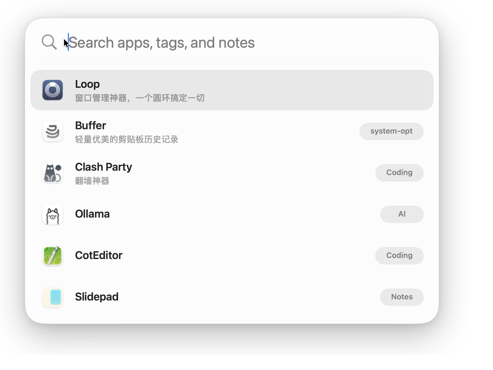
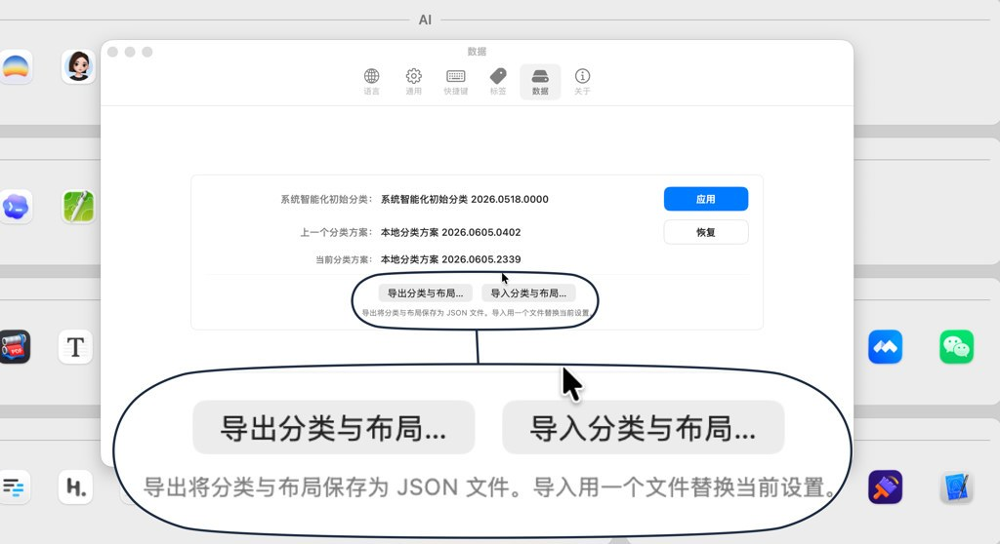

Je hoeft Launchpad niet te missen. TagLauncher zet je apps in één tagraster dat prettig werkt met het toetsenbord.





Geen mappen één voor één openen en geen pagina’s doorbladeren. Een app vinden moet direct zijn.
4 weergavemodi

Schrijf waar een app voor dient, toon het bij hover en vind het via Quick Search.
Ook als je alleen een tag of doel weet, brengt Quick Search je naar de juiste app.
Search apps, tags, and notes


Exporteer categorieën, volgorde en lay-out als JSON en herstel ze op een andere Mac.
Data blijft op je Mac. Geen account, cloudsync, analytics, advertenties of tracking.
Startplannen voor 5000+ populaire Mac-apps maken beginnen vanaf nul eenvoudiger.